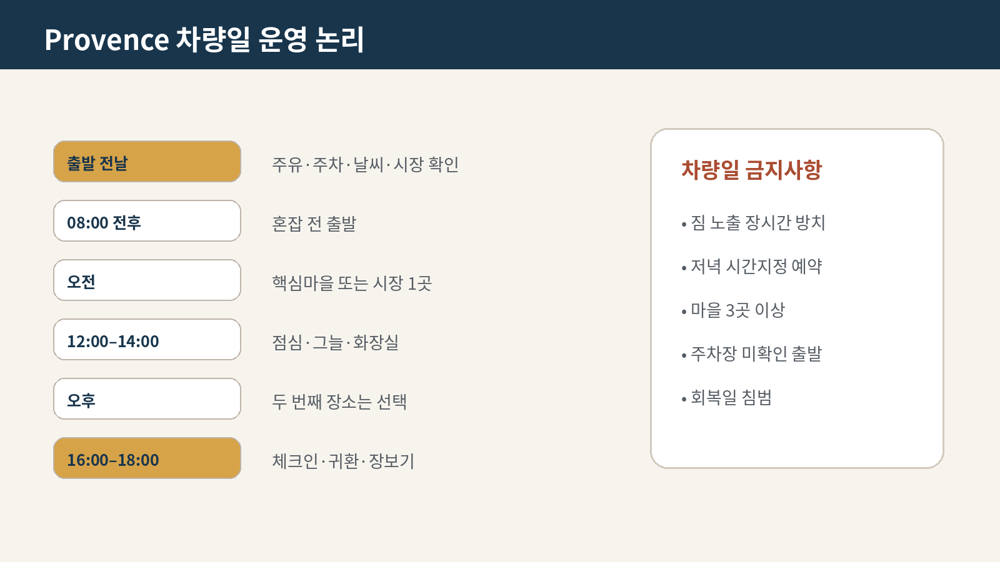

교통
어떻게 움직일 것인가

도착·출발·지역 내 교통
Day 12에 Nice-Ville 역에서 렌터카를 받는다(DEC-A11). 그런데 엑상 구시가지에서는 차를 쓸 수 없다.
이 모순이 이 구간 교통 전략의 전부다.
| Day | 차량 |
|---|---|
| 12 | 인수 · 이동 · 숙소 주차장에 넣는다 |
| 13 | 쓰지 않는다. 전부 도보 |
| 14 | Marseille는 대중교통, 차량은 숙소에 유지 |
| 15 | 아틀리에까지 도보 또는 짧게 사용 |
| 16 | 뤼베롱 이동 |
렌터카 인수와 프랑스 도로
| 항목 | 내용 |
|---|---|
| 장소 | 니스 코트다쥐르 공항 T2 |
| 완충 | 60–90분 — 서류·점검·출차 |
| 필수 확인 | 연료 종류 · 주유구 라벨 촬영 · 외관 전체 영상 |
| 경로 | 니스 → 생폴드방스 → 그라스 → 엑상 |
| 최고 위험 | 인수 지연 · 체크인 · 주차 |
08:30 출발을 지켜라. 이 날 오전에 새로운 것을 넣지 않는다.
| 항목 | 내용 |
|---|---|
| 유료 | A- (Autoroute) 대부분 |
| 무료 | N-, D- |
| 무연 95 | SP95 / Sans Plomb 95 |
| 경유 | Gazole / Diesel |
| 원형교차로 | 안에 있는 차가 우선 |
| 제한속도 | 시내 50 · 국도 80 · 고속 130 (우천 110) |
| 국제운전면허 | 필수 |
⚠ 전자 태그(télépéage) 전용 차선에 들어가지 마라. 렌터카에 태그가 없으면 후진해야 한다.
니스 → 엑상은 A8이 기본이다. 유료 구간이다.
엑상 시내 주차
구시가지는 보행 구역이 넓고 일방통행이 많다. 골목에 차를 넣으면 나올 수 없다.
| 원칙 | 내용 |
|---|---|
| 기본 | 숙소 주차장에 두고 도보 |
| 노상 | 파랑=유료 시간제 · 초록=거주자 우선 · 노랑=금지 |
| 시장일 | 화·목·토 오전은 중심가 진입 금지에 가깝다 |
| 야간 | 차 안에 보이는 짐을 남기지 않는다 |
Day 13이 목요일 시장일이다. 차를 뺄 생각을 하지 마라.
- Vieil Aix와 Cours Mirabeau 주변은 보행·차량제한 구역이 많다.
- 숙소에 주차한 뒤 9/9·9/11·9/12는 차를 움직이지 않는다.
- Marseille 기본일에는 출차하지 않고, 출발일에는 Lourmarin 방향으로 이동한다. Cassis 대체안을 택할 때만 차량을 쓴다.
- 내비게이션보다 숙소가 보내는 주차장 진입주소를 사용한다.
주요 공영주차
| 주차장 | 규모·특징 | 사용 판단 |
|---|---|---|
| Rotonde | 약 1,800면, 24시간, 승강기, 24시간 상한 €25 — 계획가(2026-08 조사) | 숙소주차 불가 시 가장 안정적 |
| Mignet | Mazarin·Cours Mirabeau 접근 | Granet·남쪽 숙소권 |
| Carnot | 동쪽 구시가지 접근 | Atelier·Cimiez 방향이 아니라 Aix 동부 |
| Pasteur | 성당·북부 구시가지 | Aquabella·Saint-Sauveur권 |
차량 내 짐
- 9/13 Lourmarin 방문에는 전 일정 짐이 차량에 있다.
- 트렁크에 들어가지 않는 물품은 마을 방문 전에 숙소 또는 보관서비스를 검토한다.
- 노트북·여권·카메라·의약품은 항상 휴대한다.
- 주차 후 트렁크를 다시 열어 짐이 있음을 노출하지 않는다.
카시스 주차와 저배출구역
카시스는 작은 항구 마을에 방문객이 몰린다. 중심 주차가 매우 어렵다.
| 대응 | 내용 |
|---|---|
| 외곽 주차 후 도보 또는 셔틀 | 표준 방식 셔틀 운영 확인 |
| 도착 시각 | 이를수록 유리하다 |
| 칼랑크 방면 | 차량 규제가 별도로 있다. 방문지 파일 참조 |
프랑스 주요 도시권에 저배출구역이 있다. 마르세유·엑상 광역권 해당 여부와 렌터카 스티커(Crit'Air) 부착을 인수 시 확인한다 확인 필요.
문전 이동 실행표
| 구간 | 현실적 문전시간 | 방법·주의 |
|---|---|---|
| 숙소→구시가지 | 10–25분 | 시내일 차량 사용금지 |
| 숙소→Granet | 25–40분 | 큰 가방 제한 |
| 숙소→Atelier | 25–40분 | 오르막·예약 15분 전 |
| Aix→Marseille | 60–90분 | Ligne 50·A7 정체, 실제 시간표 재확인 |
| Aix→Cassis 선택 대안 | 80–110분 | 9/11(금)은 Gorguettes 셔틀 미운행 (Gorguettes 셔틀은 9월 주말·방학·공휴일만 운행 — 평일 무효) — Presqu'île 유료주차 또는 대체안 필요 대안 확정 대기 |
| Aix→Lourmarin | 70–90분 | 일요일 주차 |
| Lourmarin→농가 | 60–120분 | 정확한 주소 확정 후 재계산 |
Marseille 왕복
| 구간 | 기본안 | 실행 포인트 |
|---|---|---|
| Aix 숙소→Gare routière | 도보·시내버스 | 출발 20분 전 도착 |
| Aix→Marseille Saint-Charles | 광역버스 Ligne 50 | 직행축을 기본으로 하되 2026-09-11 실제 시각·정류장은 전날 공식 앱에서 재확인 |
| Saint-Charles→Vieux-Port | Métro M1 | 혼잡한 에스컬레이터에서 휴대전화·지갑을 꺼내지 않음 |
| Fort Saint-Jean→Saint-Charles→Aix | 도보·Métro M1·Ligne 50 | 막차가 아니라 저녁 전 귀환편을 선택 |
철도는 운행·숙소 위치가 더 유리할 때의 대안이다. 차량은 주차와 도심운전 부담 때문에 기본안으로 쓰지 않는다.